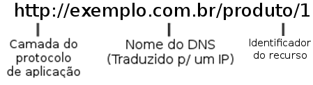

API REST utilizando SpringMVC
Sistema para controle de Locações
FAI - Centro de Ensino Superior em Gestão, Tecnologia e Educação
Criado por Élysson Mendes Rezende / @elyssonmr
Desenvolvedor Pleno na BrBid.com
Vamos discutir sobre:
- Introdução a arquitetura REST
- Caracteristicas da Arquitetura REST
- O protocolo HTTP na arquitetura REST
- Preparação do Projeto no NetBeans
- Codificação de um projeto de exemplo
- Utilização do app "I'm Only Resting" no teste do exemplo
- Codificação do "SysLoc" - LoCar
- Conclusão
Sobre Mim
- Formado em Sistemas de Informação pela FAI
- Pós Graduado em Desenvolvimento Ágil de Aplicativos para dispositivos Móveis e Web pela FAI
- Desenvolvedor Pleno na BrBid.com
- Curioso por tecnologias novas (que funcionem no linux :D)
- Cozinheiro, Seriezeiro e Pedaleiro
- Rank 13 no Heroes of The Storm (Reilith#1928)
Introdução a Arquitetura REST
- O estilo arquitetural "REpresentation State Transfer" foi criado por Roy Fielding em sua tese de doutorado;
- É utilizado para a troca de dados entre sistemas distribuídos;
- É baseado nos estilos Cliente-Servidor e Peer-to-Peer;
- As trocas de dados utilizam o protocolo HTTP;
- Usado para compartilhamento/integração de dados entre sistemas;
- Pode ser utilizados com diversos formatos de mensagens (Json, XML e etc);
Caracteristicas da Arquitetura REST
- Permite criar serviços mais leves até serviços mais robustos;
- Utiliza os verbos do protocolo HTTP para alterar os estados dos recursos;
- Não deve haver estados na comunicação, ou seja, toda mensagem é tratada como única
- Foca na interface uniforme entre os componentes
- Permite a criação de sistemas mais desacoplados
Caracteristicas da Arquitetura REST
-
A arquitetura REST é definida por:
- Indentificação de recursos
- Manipulação de recursos por meio de representações
- As mensagens são autodescritivas
- Hipermídia como motor do estado da aplicação
- Permite escrever o sistema utilizando diversas tenologias
O protocolo HTTP na arquitetura REST
- Hipertext Transfer Protocol é o único protocolo criado para transferir representações de recursos;
-
É compativel com diversos recursos da arquitetura REST:
- Ausência de estados entre as conexões;
- Possui mecanismos de controle de cache;
- É possível utilizar diversas camadas de serviço;
- Utiliza o estilo Cliente-Servidor;
- Possui uniformidade na representação dos dados transferidos;
O protocolo HTTP na arquitetura REST
- O verbo GET indica a busca de um recurso;
- O verbo POST indica o envio de informações de um novo recurso;
- O verbo HEAD indica a busca de meta-informação de um recurso;
- O verbo PUT indica a atualização das informações do recurso;
- O verbo DELETE indica a exclusão de um recurso;
O protocolo HTTP na arquitetura REST
- Todos os Recursos são identificados por meio de identificador Uniforme de Recursos (URI);
- Composto por uma cadeia de caracteres que identificam um nome ou recurso;
- Exemplo:

Preparação do projeto no NetBeans
Criando o projeto no NetBeans
- Java Web -> New Web Application
- Escolha um nome. Ex: SpringMVCRest
- Escolha o Tomcat que ele sugerir. Ex: 8.0
- Não Escolha nenhum Framework
- Adicionar as bibliotecas copiadas ao projeto
- Criar o pacote "br.fai.springmvcrest"
Preparação do Projeto no NetBeans
Configurações do Projeto (XML \o/ #SQN)
- Criar o pacote "br.fai.springmvcrest.config"
- Criar a classe "AppConfig.java"
- Adicionar o código:
package br.fai.springmvcrest.config;
import org.springframework.context.annotation.ComponentScan;
import org.springframework.context.annotation.Configuration;
import org.springframework.web.servlet.config.annotation.EnableWebMvc;
@Configuration
@ComponentScan("br.fai.springmvcrest.*")
@EnableWebMvc
public class AppConfig {
}
Preparação do Projeto no NetBeans
Criar a classe "WebAppInitializer.java"
Adicionar o código:
package br.fai.springmvcrest.config;
import javax.servlet.ServletContext;
import javax.servlet.ServletException;
import javax.servlet.ServletRegistration.Dynamic;
import org.springframework.web.WebApplicationInitializer;
import org.springframework.web.context.support.AnnotationConfigWebApplicationContext;
import org.springframework.web.servlet.DispatcherServlet;
public class WebAppInitializer implements WebApplicationInitializer {
@Override
public void onStartup(ServletContext servletContext) throws ServletException {
AnnotationConfigWebApplicationContext ctx = new AnnotationConfigWebApplicationContext();
ctx.register(AppConfig.class);
ctx.setServletContext(servletContext);
Dynamic dynamic = servletContext.addServlet("dispatcher", new DispatcherServlet(ctx));
dynamic.addMapping("/");
dynamic.setLoadOnStartup(1);
}
}
Codificação de um projeto de exemplo
- Criar o pacote "br.fai.springmvcrest.models"
- Criar a classe "Veiculo.java"
- Adicionar o código:
package br.fai.springmvcrest.models;
public class Veiculo {
private Long id;
private String modelo;
public Veiculo(long id, String modelo) {
this.id = id;
this.modelo = modelo;
}
// Getters e Setters
}
Codificação de um projeto de exemplo
- Criar o pacote "br.fai.springmvcrest.controller"
- Criar a classe "VeiculoController.java"
- Adicionar o código:
package br.fai.springmvcrest.controller;
import br.fai.springmvcrest.models.Veiculo;
import java.util.ArrayList;
import java.util.List;
import org.springframework.web.bind.annotation.RequestMapping;
import org.springframework.web.bind.annotation.RestController;
@RestController
public class VeiculosController {
@RequestMapping(value="/veiculos/", method=RequestMethod.GET)
public List<Veiculo> getVeiculos() {
List<Veiculo> resp = new ArrayList<Veiculo>();
resp.add(new Veiculo(1l, "Fiesta"));
return resp;
}
}
Codificação de um projeto de exemplo
Ainda no veículo controller, Adicionar o código:
@RequestMapping(value="/veiculos/{id}", method=RequestMethod.GET)
public Veiculo getDetail(@PathVariable Long id) {
return new Veiculo(id, "Buscado");
}
@RequestMapping(value="/veiculos/", method=RequestMethod.POST)
@ResponseStatus(HttpStatus.CREATED)
public Veiculo create(@RequestBody Veiculo veiculo) {
return veiculo;
}
@RequestMapping(value="veiculos/{id}", method=RequestMethod.PUT)
public Veiculo update(@PathVariable Long id,
@RequestBody Veiculo veiculo) {
return veiculo;
}
Utilização do App I'm Only Resting
Codificação do "SysLoc" - LoCar
Requisitos:
- Cadastrar Veículos
- Cadastrar Clientes
- Cadastrar Emprestimos
- Cadastrar Reservas (Extra)
Codificação do "SysLoc" - LoCar
Padrões de Projetos que vamos utilizar
- Singleton
- DAO
- Injeção de dependencias
- Front Controller (o Spring que esta cuidando disso)
Mãos na massa
Fazer o CRUD de Veículos
Implementação de Singleton
Implementação do padrão DAO
Codificação do Controller
Testes com o "im-only-resting"
Conclusões
- Podemos criar de aplicações simples (nosso exemplo) a complexas utilizando a arquitetura REST;
- Conseguimos criar um interface uniforme para distribuir a nossa aplicação;
- O Spring MVC 4.0 possuí recursos para facilitar o desenvolvimento de serviços REST;
- Existem ferramentas que podemos utilizar para testar os nossos serviços;